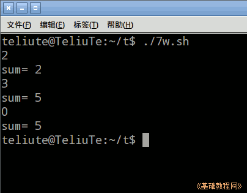
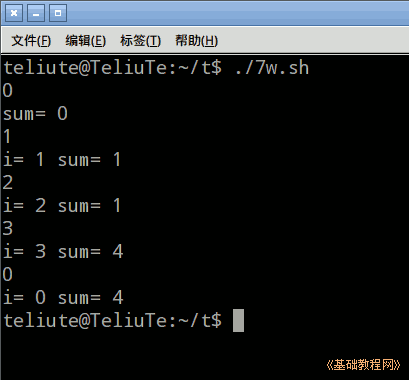

Bash Shell 脚本编程基础
作者：TeliuTe 来源：基础教程网
七、while 循环 返回目录 下一课while 循环一般用在不能确定循环次数的情况，根据条件来循环；
1、while 循环
1）启动文本编辑器gedit，输入第一行 #!/bin/bash ，保存文件为 7w.sh，并设置可执行权限；
2）语句格式为 while [条件]; do 命令; done ，输入下面的语句；
条件也可以用方框[ $i -ne 0 ] ，程序运行后，输入一个数按回车，如果输入的是0，就会结束程序；

3）循环中的 break 语句用于退出循环，continue 语句用于结束本次循环，直接进行下一次循环，输入下面的语句；
%是取余，偶数只显示，奇数加到sum里；

4）下载本课范例；
本节学习了while 循环的基础知识，如果你成功地完成了练习，请继续学习下一课内容；
本教程由TeliuTe制作|著作权所有
基础教程网：http://teliute.org/
美丽的校园……
转载和引用本站内容，请保留作者和本站链接。